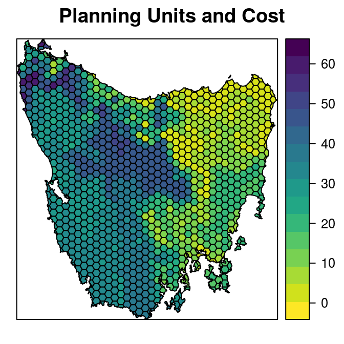
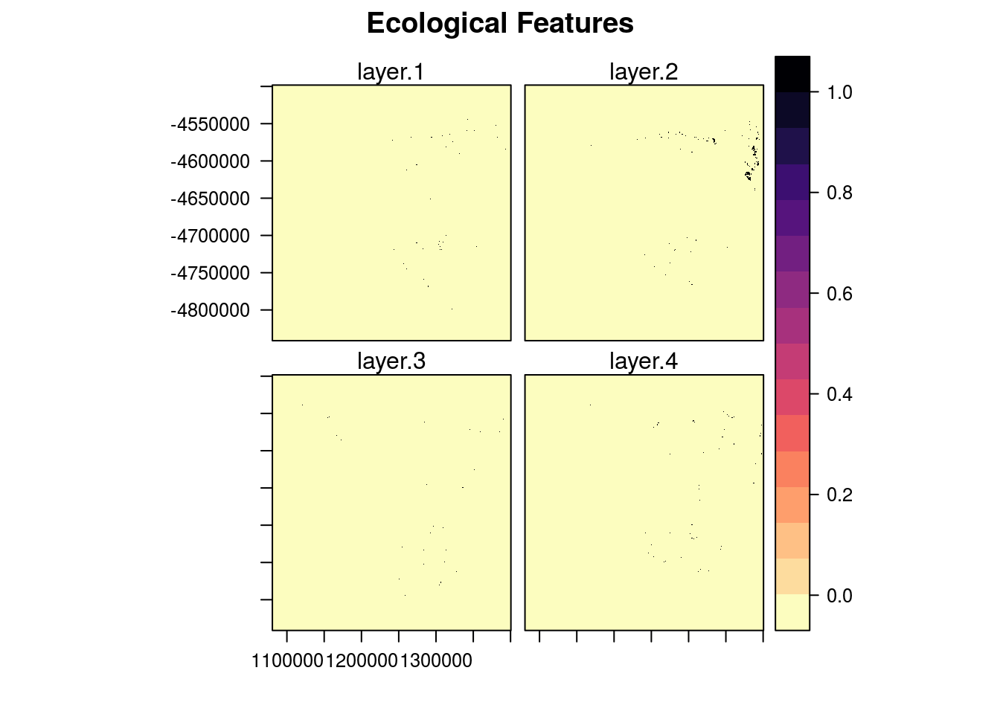
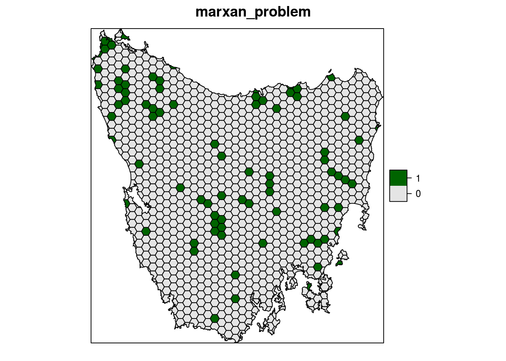
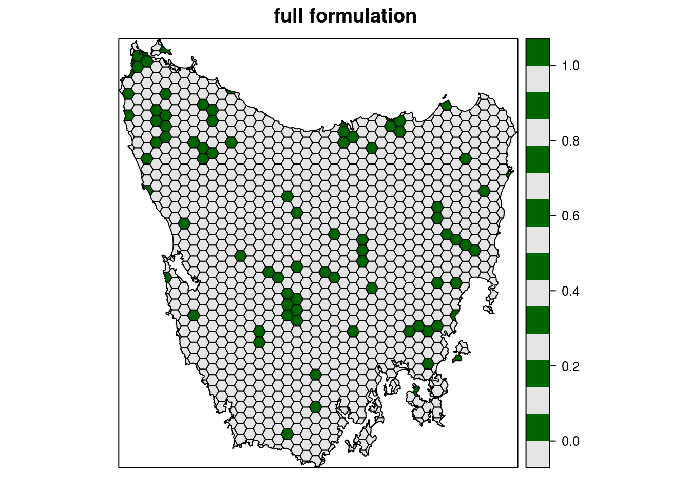

The intent of this tutorial is to provide a worked example of how spatial shapefile data can be incorporated into a conservation prioritization problem with prioritizr. For raster data, refer to the Salt Spring Island vignette.
The dataset was obtained from the “Introduction to Marxan” course and was originally a subset of a larger spatial prioritization project performed under contract to Australia’s Department of Environment and Water Resources.
This tutorial will use functions from the prioiritizr package. Users can refer to the vignettes built into the prioritizr package to familiarize themselves with the basic usage of prioritizr and the concepts behind the package.
library(prioritizrdata)
library(prioritizr)
library(rasterVis)
library(viridis)This dataset contains two components. First, a planning unit spatial layer, where the attribute table has three columns containing unique identifiers (‘ids’), unimproved land values (‘cost’), and their existing level of protection (‘status’). Units with 50% or more of their area contained in IUCN protected areas are associated with a status of 2, otherwise they are associated with a value of 0. Users familiar with Marxan formatting will notice that this formatting follows Marxan input file specifications. In Marxan, planning units must be described in a table containing one row for each planning unit with a unique ID and the corresponding cost. This will become important for problem formulation with this dataset, as both the problem and marxan_problem functions can be used.
The second component of this dataset is the feature data. This is a RasterStack class object, where each layer in the stack represents the distribution of a different vegetation class in Tasmania, Australia. There are 62 vegetation classes in total. For a given layer, cells indicate the presence (value of 1) or absence (value of 0) of the vegetation class in an area.
First, load the data into the R environment:
data(tas_pu) # planning units
data(tas_features) # biodiversity featuresLet’s have a look at the planning unit data.
print(tas_pu)## class : SpatialPolygonsDataFrame
## features : 1130
## extent : 1080623, 1399989, -4840595, -4497092 (xmin, xmax, ymin, ymax)
## coord. ref. : +proj=aea +lat_1=-18 +lat_2=-36 +lat_0=0 +lon_0=132 +x_0=0 +y_0=0 +ellps=GRS80 +units=m +no_defs
## variables : 5
## names : id, cost, status, locked_in, locked_out
## min values : 1, 0.192488262910798, 0, 0, 0
## max values : 1130, 61.9272727272727, 2, 1, 0spplot(tas_pu, zcol = "cost", names.attr = "Cost",
main = "Planning Units and Cost", col.regions = rev(viridis(100)))
Next, the feature data. We’ve only plotted the first four features as an example. Pixels value denotes the presence or absence of that feature within the study area extent.
print(tas_features)## class : RasterStack
## dimensions : 343, 320, 109760, 62 (nrow, ncol, ncell, nlayers)
## resolution : 1000, 1000 (x, y)
## extent : 1080496, 1400496, -4841217, -4498217 (xmin, xmax, ymin, ymax)
## coord. ref. : +proj=aea +lat_1=-18 +lat_2=-36 +lat_0=0 +lon_0=132 +x_0=0 +y_0=0 +ellps=GRS80 +units=m +no_defs
## names : layer.1, layer.2, layer.3, layer.4, layer.5, layer.6, layer.7, layer.8, layer.9, layer.10, layer.11, layer.12, layer.13, layer.14, layer.15, ...
## min values : 0, 0, 0, 0, 0, 0, 0, 0, 0, 0, 0, 0, 0, 0, 0, ...
## max values : 1, 1, 1, 1, 1, 1, 1, 1, 1, 1, 1, 1, 1, 1, 1, ...levelplot(tas_features[[1:4]], main = "Ecological Features", layout = c(2,2),
col.regions = rev(magma(100)))
Because the Tasmania planning units are a spatial polygon layer, not a raster, there is more flexibility in the type of costs and features that can be used in problem formulation. That said, there is a trade-off with the efficiency of solving. Inputting planning units as a raster will usually produce solutions faster, but to take advantage of this you will have to coerce all of the data into the same raster grid dimensions, which is not always feasible or desirable.
We will give an example of problem formulation with this dataset using the fully customizable problem function, and then the simpler but more limited marxan_problem function as a comparison.
The files in this dataset follow the conventions used by Marxan, so problems can be formulated simply and easily with the Marxan problem function, which provides a single function wrapper for problem objects, penalties, and constraints. The problem object produced by this function will still use an exact integer linear programming solver, so in that way departs from traditional Marxan solving with simulated annealing. The marxan_problem approach is considerably more limited than the key prioritizr problem functions, but has the same functionality as Marxan and may therefore be handy to users familiar with Marxan.
All problem objects formulated with marxan_problem use the minimum set objective. Targets can be either relative or absolute, and planning units can be specified for masking in or out using the locked_in and locked_out arguments. To favor clumped solutions, use the penalty argument to impose a penalty on solutions with high boundary lengths (equivalent to the Boundary Length Modifier (BLM) used in Marxan), and the edge_factor argument to scale the penalty for edges that do not have neighboring planning units, such as coastline. Cost does not have to be explicitly identified with the marxan_problem, because if column names follow Marxan conventions, the cost column can be located by the function.
For simplicity we set all of the targets at the same level, 17%, to reflect the Aichi biodiversity target to “safeguard” at least 17% of terrestrial ecosystems by 2020. For example, to prioritize planning units in Tasmania that meet the 17% representation target at the least cost:
p1 <- marxan_problem(tas_pu, tas_features, targets = 0.17,
targets_type = "relative", penalty = 0.0005,
edge_factor = 0.5, cost_column = "cost")Note: the formulation of a Marxan problem is slightly different for Marxan input files (i.e. with a “.dat” extension). Refer to the help pages and the quick start guide for instructions on working with these files.
This same problem can be formulated with the key prioritizr functions. We recommend this approach for any problem more complex than the simple problem described above, and when input data do not precisely match Marxan formatting conventions. In this example, we leave the decision framework as the default; binary decision making. This means the planning unit is either selected in the solution or not selected - no partial planning units are permitted.
To formulate this problem:
p2 <- problem(tas_pu, tas_features, cost_column = "cost") %>%
add_min_set_objective() %>%
add_relative_targets(0.17) %>%
add_binary_decisions() %>%
add_boundary_penalties(penalty = 0.0005, edge_factor = 0.5)Prioritizr supports three different integer linear programming solver packages: gurobi, Rsymphony, and lpsymphony. There are pros and cons to each of these, but the actual impact of solver type on the planning units in the solution should be relatively minor.
First, remember that the solvers must be installed and loaded separately. We use thegurobi solver in this example, as it is the quickest of the three solvers to find solutions. Both Marxan problem objects and prioritizr problem objects are solved in the same way
s1 <- solve(p1) # marxan problem## Optimize a model with 6358 rows, 4278 columns and 14152 nonzeros
## Variable types: 0 continuous, 4278 integer (4278 binary)
## Coefficient statistics:
## Matrix range [1e-02, 1e+00]
## Objective range [5e-02, 1e+02]
## Bounds range [1e+00, 1e+00]
## RHS range [3e-03, 3e+00]
## Found heuristic solution: objective 29458.8
## Found heuristic solution: objective 5983.59
## Presolve removed 34 rows and 25 columns
## Presolve time: 0.04s
## Presolved: 6324 rows, 4253 columns, 14110 nonzeros
## Found heuristic solution: objective 6762.4322957
## Variable types: 0 continuous, 4253 integer (4253 binary)
## Presolved: 6324 rows, 4253 columns, 14110 nonzeros
##
##
## Root relaxation: objective 2.510246e+03, 1109 iterations, 0.07 seconds
##
## Nodes | Current Node | Objective Bounds | Work
## Expl Unexpl | Obj Depth IntInf | Incumbent BestBd Gap | It/Node Time
##
## 0 0 2510.24636 0 216 5983.58653 2510.24636 58.0% - 0s
## H 0 0 3060.1023375 2510.24636 18.0% - 0s
## H 0 0 2904.6014034 2510.24636 13.6% - 0s
## 0 0 2640.37794 0 262 2904.60140 2640.37794 9.10% - 0s
##
## Cutting planes:
## Gomory: 9
## Cover: 13
## MIR: 15
## StrongCG: 11
## GUB cover: 2
##
## Explored 1 nodes (1631 simplex iterations) in 0.42 seconds
## Thread count was 1 (of 4 available processors)
##
## Solution count 5: 2904.6 3060.1 5983.59 ... 29243.7
##
## Optimal solution found (tolerance 1.00e-01)
## Best objective 2.904601403405e+03, best bound 2.640377942458e+03, gap 9.0967%s2 <- solve(p2) # prioritizr problem## Optimize a model with 6358 rows, 4278 columns and 14152 nonzeros
## Variable types: 0 continuous, 4278 integer (4278 binary)
## Coefficient statistics:
## Matrix range [1e-02, 1e+00]
## Objective range [5e-02, 1e+02]
## Bounds range [1e+00, 1e+00]
## RHS range [3e-03, 3e+00]
## Found heuristic solution: objective 29458.8
## Found heuristic solution: objective 5983.59
## Presolve removed 34 rows and 25 columns
## Presolve time: 0.03s
## Presolved: 6324 rows, 4253 columns, 14110 nonzeros
## Found heuristic solution: objective 6762.4322957
## Variable types: 0 continuous, 4253 integer (4253 binary)
## Presolved: 6324 rows, 4253 columns, 14110 nonzeros
##
##
## Root relaxation: objective 2.510246e+03, 1109 iterations, 0.06 seconds
##
## Nodes | Current Node | Objective Bounds | Work
## Expl Unexpl | Obj Depth IntInf | Incumbent BestBd Gap | It/Node Time
##
## 0 0 2510.24636 0 216 5983.58653 2510.24636 58.0% - 0s
## H 0 0 3060.1023375 2510.24636 18.0% - 0s
## H 0 0 2904.6014034 2510.24636 13.6% - 0s
## 0 0 2640.37794 0 262 2904.60140 2640.37794 9.10% - 0s
##
## Cutting planes:
## Gomory: 9
## Cover: 13
## MIR: 15
## StrongCG: 11
## GUB cover: 2
##
## Explored 1 nodes (1631 simplex iterations) in 0.38 seconds
## Thread count was 1 (of 4 available processors)
##
## Solution count 5: 2904.6 3060.1 5983.59 ... 29243.7
##
## Optimal solution found (tolerance 1.00e-01)
## Best objective 2.904601403405e+03, best bound 2.640377942458e+03, gap 9.0967%These solutions can now be plotted.
# reformat solution column to make legends appear nicely
s1$solution_1 <- factor(s1$solution_1)
s2$solution_1 <- factor(s2$solution_1)
# plot solutions
par(mfrow = c(1, 2))
spplot(s1, "solution_1", col.regions = c('grey90', 'darkgreen'),
main = "marxan_problem")
spplot(s2, "solution_1", col.regions = c('grey90', 'darkgreen'),
main = "full formulation")